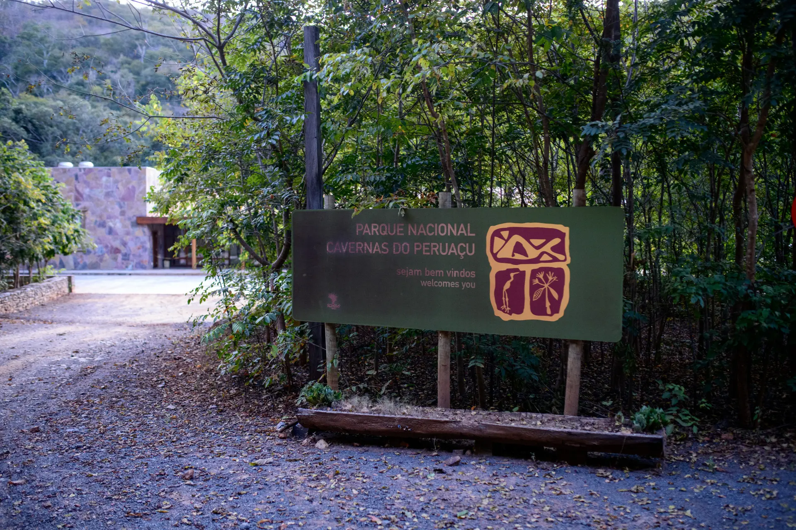

© Isabella Reis
Trilha do Arco do André
Aventura, cavernas majestosas, mirantes e paisagens de tirar o fôlego.

O Cânion do Peruaçu, localizado no Parque Nacional Cavernas do Peruaçu e reconhecido em 2025 como Patrimônio Natural da Humanidade pela Unesco, encanta pela imponência de sua formação geológica, resultado do raro desabamento de uma caverna de 25 quilômetros de extensão. O parque abriga mais de uma centena de cavernas, grandiosas paisagens e sítios arqueológicos que preservam preciosas manifestações de arte rupestre. A visita oferece uma experiência completa, que combina natureza, aventura e cultura. Atualmente, nove atrativos estão abertos à visitação, e para conhecer todos eles é necessário mais de um dia de passeio. O roteiro deve ser escolhido de acordo com o interesse e o condicionamento físico de cada visitante. Ressalta-se que o acesso exige agendamento prévio junto ao ICMBio e a contratação obrigatória de condutor ambiental credenciado. O parque está localizado a cerca de 45 km de Januária, e nas proximidades você encontra pousadas e restaurantes que oferecem conforto e opções de alimentação para os visitantes.
Horário de funcionamento: Aberto de terça-feira a domingo, das 8h às 18h
Tipo de visita: Visita guiada por condutor ambiental
Formas de pagamento: Não há cobrança para acesso, mas o acesso somente é possível mediante contratação de condutor ambiental credenciado
Pet Friendly: Não
Contato: ICMBio - (38) 3623-1038 / 3623-1039 - cavernas.peruacu@icmbio.gov.br

Grandiosa, histórica e marcada pela famosa Perna da Bailarina.
Aventura, cavernas majestosas, mirantes e paisagens de tirar o fôlego.

Uma das cavernas mais ornamentadas do parque.

Arte rupestre, formações rochosas e vista panorâmica.

Um dos sítios arqueológicos mais relevantes do parque.

Painéis de arte rupestre e trilha às margens do Rio Peruaçu.

Roteiro desafiador, com arte rupestre, espeleotemas e mais de 500 degraus.

Paredão com pinturas rupestres exclusivas do Vale do Peruaçu.

Mirantes, mata seca, vegetação rupestre e geologia fascinante.